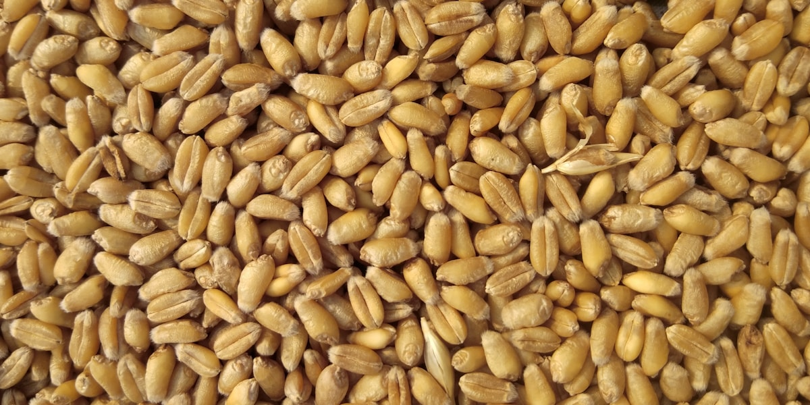
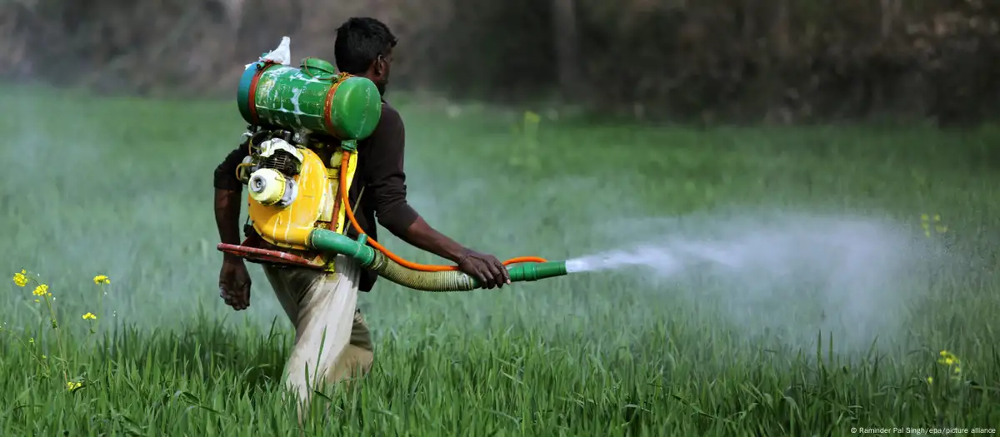
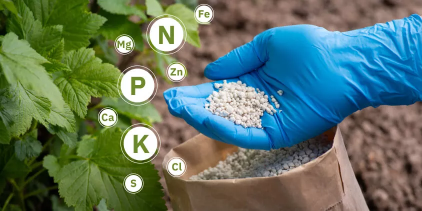

Empowering Farmers with Agricultural Solutions
MEAB PLC - Your trusted partner for premium agricultural inputs, modern farming equipment, and expert agronomic solutions across Ethiopia.
10,000+
Happy Farmers
50+
Service Locations
100+
Product Varieties
15+
Years Excellence
Our Comprehensive Services
End-to-end agricultural solutions designed for Ethiopian farming success
Comprehensive Seed Solutions
MEAB General Trading supplies a diverse range of high-quality seeds including field crops, forage, and vegetable varieties. Our seeds are improved, climate-resilient, and optimized for Ethiopian conditions.
- Field crops: teff, wheat, maize, sorghum
- Forage & animal feed seeds
- Improved vegetable varieties
- Climate-resilient strains
Complete Agrochemical Solutions
Full range of crop protection products including insecticides, fungicides, herbicides, and plant growth regulators. All products meet international safety and efficacy standards.
- Insecticides & pesticides
- Fungicides & disease control
- Herbicides & weed management
- Plant growth regulators
Advanced Fertilizer Technology
Specialized fertilizers including water-soluble formulations and micronutrient supplements. Our fertilizers are designed to maximize crop yields while maintaining soil health and sustainability.
- Water-soluble fertilizers
- Micronutrient fertilizers
- Balanced NPK formulations
- Soil health optimization
Irrigation & Mechanization
Complete irrigation equipment and mechanization solutions to enhance farm efficiency and productivity. From small-scale to commercial farming operations, we provide the right technology for every need.
- Modern irrigation systems
- Farming mechanization
- Equipment maintenance
- Technical installation support
Expert Technical Support
Professional agronomists and technical experts provide comprehensive farming advice, capacity building, and ongoing support to maximize agricultural productivity and sustainability.
- Agronomic consultation
- Capacity building training
- Soil analysis & testing
- Ongoing technical support
Partnership & Collaboration
We work closely with farmers, youth, and women to enhance skills, knowledge, and livelihoods. Our collaborative approach ensures sustainable agricultural transformation across Ethiopia.
- Farmer empowerment programs
- Youth agricultural training
- Women in agriculture support
- Community development initiatives
Our Premium Products
Quality agricultural inputs backed by scientific research and field testing

Premium Seeds Collection
MEAB General Trading supplies a diverse range of high-quality seeds including field crops, forage, and vegetable varieties. All seeds are improved, climate-resilient, and optimized for Ethiopian conditions.
- Field Crops: Teff, wheat, maize, sorghum
- Forage & Animal Feed: Alfalfa, cowpea, lablab, Rhodes grass
- Vegetables: Wide range of improved varieties
- Climate-Resilient: Drought and disease-resistant strains

Complete Agrochemical Solutions
Full range of crop protection products including insecticides, fungicides, herbicides, and plant growth regulators. All products meet international safety and efficacy standards for sustainable farming.
- Insecticides: Effective pest control solutions
- Fungicides: Disease prevention and treatment
- Herbicides: Weed management systems
- Plant Growth Regulators: Enhanced crop development

Advanced Fertilizer Technology
Specialized fertilizers including water-soluble formulations and micronutrient supplements. Our fertilizers are designed to maximize crop yields while maintaining soil health and sustainability.
- Water-Soluble Fertilizers: Fast-acting nutrient delivery
- Micronutrient Fertilizers: Essential trace elements
- Balanced Formulations: NPK and specialty blends
- Soil Health: Long-term fertility maintenance

Irrigation & Mechanization
Complete irrigation equipment and mechanization solutions to enhance farm efficiency and productivity. From small-scale to commercial farming operations, we provide the right technology for every need.
- Irrigation Systems: Modern water management solutions
- Farming Equipment: Tractors and implements
- Mechanization: Labor-saving technologies
- Technical Support: Installation and maintenance
Ready to Transform Your Farming Success?
Join thousands of Ethiopian farmers who trust MEAB PLC for their agricultural excellence and increased yields.
About MEAB General Trading
Empowering Ethiopian agriculture through innovation, quality, and sustainable solutions
MEAB General Trading is a fully registered Ethiopian agricultural enterprise specializing in seed production, distribution, agrochemical supply, and mechanization services. With a strong technical team and experienced staff, the company provides farmers and agribusinesses with reliable, innovative solutions that enhance productivity and sustainability.
Our portfolio includes improved and climate-resilient seeds, insecticides, fungicides, herbicides, plant growth regulators, water-soluble fertilizers, and micronutrients. We also offer mechanization services and irrigation technologies that improve efficiency, reduce labor constraints, and strengthen agricultural value chains.
By combining high-quality products with technical support and capacity-building training, MEAB General Trading empowers farmers, youth, and women to improve yields, increase incomes, and contribute to Ethiopia's food security and agricultural transformation.
Vision
To be a leading agricultural enterprise in Ethiopia, driving sustainable farming, innovation, and food security while empowering farmers, youth, and women.
Mission
To provide high-quality seeds, agrochemicals, and mechanization solutions, combined with technical support and capacity building that enhance productivity, income, and resilience for Ethiopian farmers and agribusinesses.
Core Values
Innovation
Continuously introducing modern agricultural solutions that improve efficiency and productivity.
Quality
Delivering reliable, effective products and services to meet farmers' needs.
Sustainability
Promoting practices that protect natural resources and strengthen long-term agricultural growth.
Empowerment
Supporting farmers, youth, and women to enhance skills, knowledge, and livelihoods.
Integrity
Conducting business ethically, transparently, and responsibly.
Our History
Founded with a vision to transform Ethiopia's agricultural sector, MEAB General Trading PLC has steadily grown into a leading provider of quality seeds, agrochemicals, mechanization services, and irrigation technologies. Over the years, we have built strong partnerships with farmers, cooperatives, and institutions to enhance productivity and sustainability.
Leadership Team
Experienced professionals with backgrounds in crop production, plant protection, seed science, and agribusiness management lead MEAB PLC. The leadership team combines deep technical expertise with practical field experience, ensuring effective strategies and farmer-centered solutions.
Success Stories from Our Farmers
Real testimonials from Ethiopian farmers who have achieved remarkable results with MEAB PLC
"MEAB PLC has revolutionized our farming. Their hybrid maize seeds and expert advice have increased our yields by 60% in just two seasons. The quality of their products is outstanding."

Abebe Kebede
Commercial Maize Farmer, Mekele"The quality of MEAB's seeds and fertilizers is exceptional. Their agronomists helped us optimize our farming practices, resulting in 45% higher yields and better crop quality."
"MEAB's modern farming equipment and technical support have transformed our operations. We've increased our farm efficiency by 50% and reduced our operational costs significantly."

Mulugeta Haile
Large-Scale Farmer, Addis AbabaGet In Touch With Our Experts
Ready to transform your farming? Our agricultural experts are here to help you succeed.
Head Office
Mekelle, Tigray, Ethiopia
Phone Numbers
+251 914 758 060 / +251 787 968 14 / +251 914 766 780
Email Address
Meab.agri@gmail.com
Business Hours
Monday - Saturday: 8:00 AM - 6:00 PM
Sunday: 9:00 AM - 2:00 PM